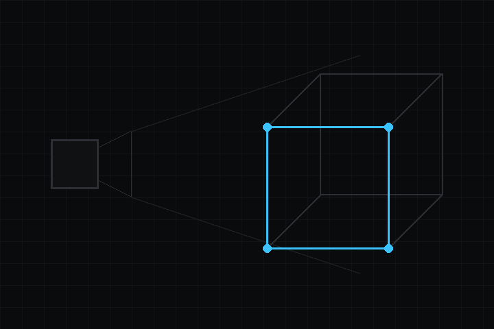

- 構築:
 1.18.0
1.18.0
|
deki-3d 0.21.0
Deki パッケージリファレンス
|

レンダーパスとして動くソフトウェアラスタライズの 3D：メッシュ、透視投影カメラ、.obj インポート。2D と 1 つのフレームバッファを共有します。
リポジトリ: github.com/dekiengine/deki-3d · 最新リリース: 0.19.0 · エンジン 0.19.0 以降が必要 · 依存: deki-rendering
DekiEditor --packages-add deki-3d <project> か、パッケージマネージャーからインストールします。エンジン自身のコンポーネントと C++ API は Deki のドキュメントにあります。
エディターでは 3D と表示されます。
| コンポーネント | カテゴリ | 説明 |
|---|---|---|
| Mesh3DSettings | 3D | 3D パスの描き方です。タイル、テクスチャと頂点のスイッチ、ライト、スレッドを設定します。 |
| MeshComponent | 3D | 3D メッシュを描きます。位置はオブジェクトのトランスフォームで決まります。表示するには、シーンのカメラを透視投影にする必要があります。 |
ビルドから外せる部分です。define を持つ機能はその define で切り替わり、それ以外はコンポーネントと一緒に取り除かれます。
| 機能 | define | デフォルト |
|---|---|---|
| Software rasteriser | DEKI_FEATURE_3D_SOFTWARE | オン |
3D パスの描き方です。タイル、テクスチャと頂点のスイッチ、ライト、スレッドを設定します。
インスペクターでの名前: Mesh3D 設定 · カテゴリ: 3D · 型: Deki3D::Mesh3DSettings
| プロパティ | 型 | デフォルト | 制約 | 説明 |
|---|---|---|---|---|
| tileSize | int32 | 32 | 8 から 512 | タイルの辺の長さ (ピクセル) です。深度バッファは 1 タイル分なので、32 なら 2 KB で済みマイコンに向きます。デスクトップなら 128 以上でも問題ありません。 |
| perspectiveCorrect | bool | true | テクスチャの遠近を補正します。オフにすると PlayStation 時代のハードウェアのようなゆがみが出て、塗りのコストが約 1 割減ります。 | |
| vertexSnap | bool | false | 投影した頂点を整数ピクセルに丸め、固定小数点時代のハードウェアのような揺れを出します。 | |
| lightYaw | float | -25 | -180 から 180 | シーンのライトが来る方向を、垂直軸のまわりの角度で指定します。0 はカメラの後ろ、90 は右です。 |
| lightPitch | float | 55 | -90 から 90 | シーンのライトの高さです。90 は真上、0 は地平線と同じ高さです。 |
| ambient | float | 0.25 | 0 から 1 | ライトの反対を向いた面がどれだけ明るいかです。0 では真っ黒になり劇的な見た目になります。大きくするほど陰影が平らになります。 |
| fillThreads | int32 | 1 | 1 から 16 | デバイスやシミュレーターのビルドで画面を塗るスレッドの数です。タイルは互いに独立しているので、ここはコア数に応じて速くなる唯一の部分です。1 ではスレッドをまったく起動せず、2 はデュアルコアのボードに向き、コア数を超えると効果がなくなります。エディターはパッケージをアンロード可能な DLL として読み込むため、プレビューは常に 1 スレッドで行います。どちらでも絵は同じです。 |
3D メッシュを描きます。位置はオブジェクトのトランスフォームで決まります。表示するには、シーンのカメラを透視投影にする必要があります。
インスペクターでの名前: メッシュコンポーネント · カテゴリ: 3D · 型: Deki3D::MeshComponent
| プロパティ | 型 | デフォルト | 制約 | 説明 |
|---|---|---|---|---|
| mesh | AssetRef (MeshAsset) | "" | コンパイル済みのメッシュアセットです。インポートしたモデルをここに割り当てます。空のままにすると、代わりに下のプリミティブを描きます。 | |
| primitive | enum | "Cube" | Cube, Quad, Pyramid | メッシュアセットが割り当てられていない間に描く組み込みの形です。 |
| tintColor | Color | "#000000FF" | メッシュ自体の色に乗算します。白ならそのままです。 | |
| shading | enum | "VertexLit" | Unlit, VertexLit, Flat | ライティングなしは単色です。頂点ライティングはシーンのライトに対して頂点ごとに陰影を付けます。フラットは三角形ごとに陰影を付け、面がはっきりした見た目になります。 |
| doubleSided | bool | false | メッシュの外側だけでなく内側も描きます。塗りのコストはおよそ 2 倍になります。 |
sortingOrder, ignoreClip, pixelSnap, alphaMode を RendererComponent から継承します。
変更履歴は英語です。
それ以前のリリース: CHANGELOG.md
パッケージのリフレクションデータから生成しています (エンジン 0.21.0)。プロパティ名はシーンファイルで使われるキーです。名前を変えても別名が残ります (互換性)。